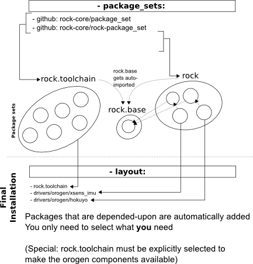

This page describes the structure of a autoproj installation, and describes how to manage one. See the introduction for the bootstrapping process.
!
The autoproj configuration and build process goes like this:
In practice, the autoproj configuration is saved in an autoproj/ directory. It is split like this:
The build is done in two steps:
Moreover, the build/log directory contains the output of all commands that have been run during the build.
Finally, a env.sh script is generated to set up your shell for the use of the installed software.
Package sets are listed in the package_sets section of autoproj/manifest file. This section looks like this:
package_sets:
- imoby
- type: git
url: git://github.com/rock-core/package_set
It lists both local and remote sets that are available for this installation. Local sets are subdirectories of the autoproj/ directory: for instance, in the above example, autoproj will look at the autoproj/imoby/ directory. Remote sets are taken from remote version control systems. Its general format is:
- type: version_control_type # git, svn, cvs, darcs
url: repository_url
For the git importer, one of ‘branch’ or ‘tag’ options can be provided as well:
- type: version_control_type # git, svn, cvs, darcs
url: repository_url
branch: branch_to_track
tag: tag_to_stick_to # it is branch OR tag
Imported package sets are saved in the .remotes directory of the autoproj installation. The importers that are available for configuration are the same than the ones available for the packages themselves, so see this page for the list of available importers.
Once you have updated your manifest file to list all the package sets that you want to use, you can list all the packages that are now available with
autoproj list-sets
Its output looks like this:
orocos.toolchain (imported by rock.core)
from: git:git://github.com/orocos-toolchain/autoproj.git push_to=git@github.com:/orocos-toolchain/autoproj.git
local: /media/Data/dfki/hrov/autoproj/remotes/orocos.toolchain
defines: log4cpp, ocl, orogen, rtt, rtt_typelib, stdint_typekit, typelib, utilmm, utilrb
rock (listed in manifest)
from: git:git://github.com/rock-core/rock-package_set.git push_to=git@github.com:/rock-core/rock-package_set.git
local: /media/Data/dfki/hrov/autoproj/remotes/rock
defines: [snip]
rock.core (listed in manifest)
from: git:git://github.com/rock-core/package_set.git push_to=git@github.com:/rock-core/package_set.git
local: /media/Data/dfki/hrov/autoproj/remotes/rock.core
imports 2 package sets
orocos.toolchain
defines: [snip]
The first line is the package set name. It is defined in the package set’s source.yml file and does not necessarily have a relationship with the name of the repository it is stored into.
The second line tells you where this set comes from. It is local if it comes along with the main autoproj configuration (manifest and so on). It is remote if it is imported from a version control system.
Finally comes the list of packages that are defined in this set.
A better way to browse packages is to look into the package directory
If you do not wish to build all the packages that are available (you rarely wish that), you have to list the desired packages in your manifest file.
To do so, you will have to create a layout section and list the desired packages:
layout:
- rock.base
- orogen
This layout can either list packages one by one, but complete package sets can also be selected (as e.g. rock.base above)
More advanced mechanisms are available to customize this list. These mechanisms are detailed here